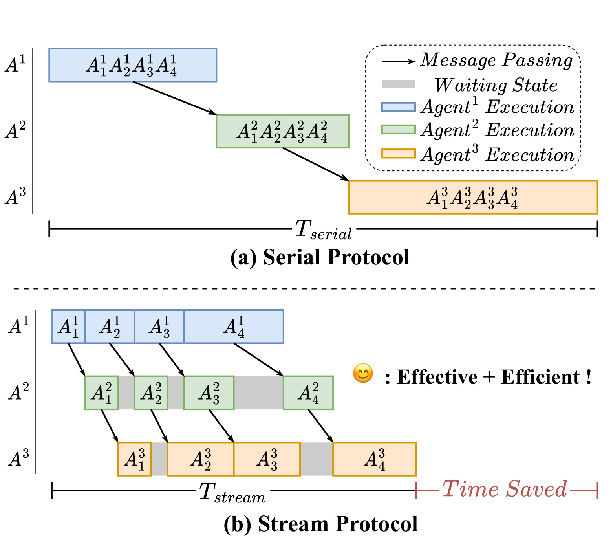
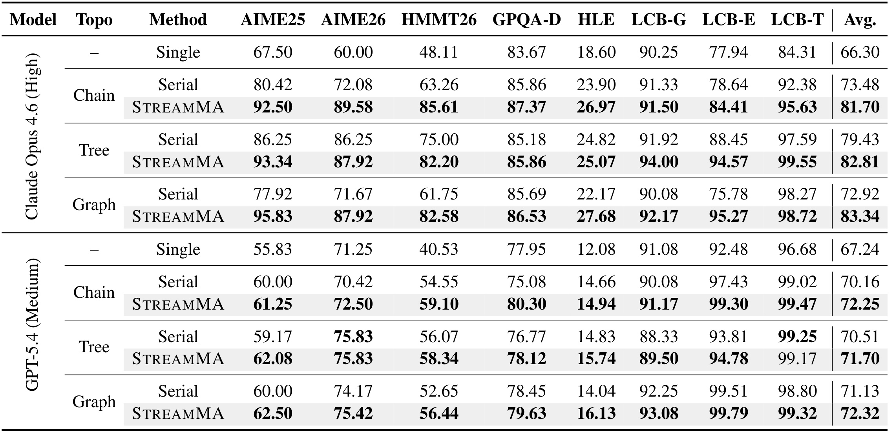
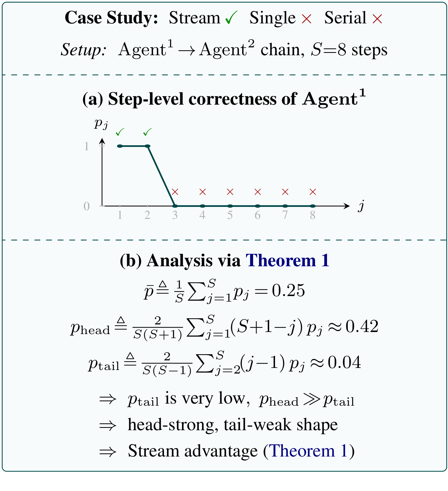
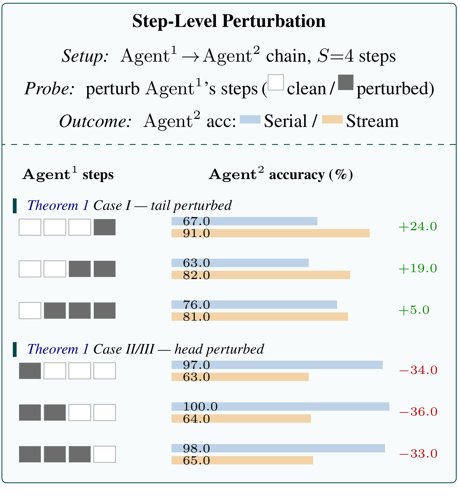
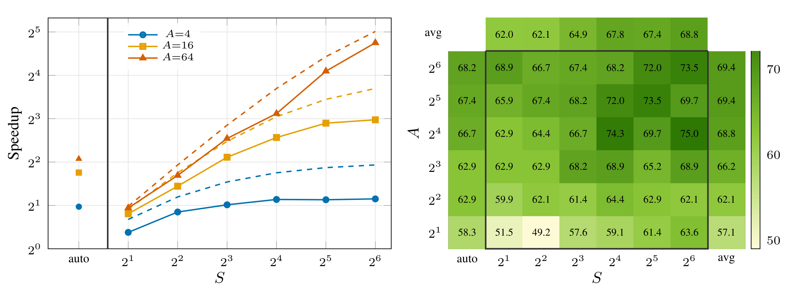

论文入口链接：arXiv:2606.05158
作者为 Zhen Yang、Xiaogang Xu、Wen Wang、Cong Chen、Xander Xu、Ying-Cong Chen；论文页给出的机构包括 HKUST(GZ)、Alibaba Group、ZJU 和 HKUST。PDF 首页提供了项目页和代码链接，本文核验到项目页 https://zhenyangcs.github.io/StreamMA-website/ 与 GitHub https://github.com/EnVision-Research/StreamMA。这篇论文讨论的是多智能体推理中的通信协议，不是再提出一个新的基础模型；它的主张是把智能体之间传递信息的粒度从“完整回复”降到“推理步骤”，同时得到更低延迟和更高准确率。
1. 背景和问题
多智能体推理系统通常把一个复杂问题交给多个 LLM agent 协作完成。每个 agent 可以有不同提示词、角色、拓扑位置或检查职责，上游 agent 的输出会变成下游 agent 的上下文。过去几年里，相关工作主要在三个方向扩展：一是改变通信拓扑，例如链式、树式、图式或 debate 式协作；二是改变交换内容，例如传递 rationale、候选答案、批评意见、KV 表示或工具调用结果；三是扩大 agent 数量，让多个独立或半独立推理轨迹产生投票与互检效果。STREAMMA 指出的盲点是：这些系统即便拓扑不同，默认通信假设却很相似，都是上游必须先完成一整段回答，下游才能开始处理。这种 generate-then-transfer 模式在单个 agent 的思考质量上看起来自然，但在系统执行上会制造明显等待。
等待问题不只是工程上的排队时间。假设一个链式系统有 A 个 agent，每个 agent 生成 S 个推理步骤。Serial 协议下，Agent2 必须等 Agent1 完成全部 S 步，Agent3 又必须等 Agent2 完成全部输出。即使每个 agent 的内部 token 流已经可以边生成边显示，agent 之间仍然把“完整回复”作为最小传输单元。这样端到端延迟会随着链路深度增长，下游节点大量时间处于空闲状态。对 Tree 或 Graph 拓扑来说，等待还会以同步屏障形式出现：一个节点可能已经收到某个前驱的早期有效信息，却仍然在等待完整上下文或其他前驱完成。
论文的反直觉点在于：减少下游看到的信息量未必降低准确率。常识会认为完整上下文包含更多证据，Serial 应当至少不比 Stream 差。但多步 CoT 推理并不是每一步都同样可靠。很多复杂数学、科学和代码题里，前几步通常在识别题型、列出约束、建立变量，错误率相对低；后续步骤需要连续代数变形、候选排除、组合搜索或代码细节模拟，错误会累积。若下游 agent 一次性读完整上游回复，它会同时接收可靠前缀和有毒尾部，并且尾部错误可能以“已经完成的推理链”形式强势影响后续判断。Stream 把早期步骤先发出去，让下游 agent 在错误尾部到来前形成自己的轨迹，后续错误对它的影响被稀释。
这里还有一个认知层面的差异。Serial 给下游的是一段看似完整、连贯、带结论的推理文本，下游 agent 很容易把它当作已经被上游充分验证的草案，再围绕这个草案做修补。Stream 给下游的是一串尚未完成的中间步骤，下游更像在边看边算，不会天然认为后续结论已经成立。因此，协议改变不仅减少等待，也改变了下游对上游内容的“权威感”。在容易被长 CoT 误导的任务里，这种权威感会变成风险：完整错误链越流畅，下游越可能沿着错误结论继续解释，而不是回到约束本身重新枚举。
从系统角度看，generate-then-transfer 还隐藏了一个资源利用问题。上游正在 decode 时，下游的模型实例、工具调用槽位和上下文缓存都没有被使用；等上游完成后，下游又要一次性处理很长的上下文，prefill 压力上升。Stream 把长链路拆成多个小阶段，让不同 agent 的 decode 可以重叠。这个思想类似流水线并行，但对象不是神经网络层，而是 agent 节点；micro-batch 也不是训练样本，而是 reasoning step。论文后面强调的 step-level scaling law，本质上就是当 micro-batch 数 S 增加时，流水线更容易填满，同时更细的中间推理也可能提高可检查性。
这个问题和大模型方向的关系很直接。它不是在讨论推荐系统那种用户-item 匹配链路，而是在讨论 LLM agent 系统的推理、通信、延迟和服务成本。它也不是普通 token streaming，因为 token streaming 多数只是改善用户可感知延迟，最终推理仍然由同一个模型完成；STREAMMA 的传输单元是“reasoning step”，接收方是另一个 agent，下游会把早期步骤纳入自己的上下文并继续推理。它位于 token 级 speculative decoding 与完整 agent message 之间：比 token 粒度更粗，减少了过细同步；比完整回复更细，打开了跨 agent pipeline parallelism。
论文真正要回答三个问题。第一，Stream 协议怎样在链式和 DAG 多智能体系统中执行，是否需要改模型或训练。第二，为什么它可能比 Serial 更准，这个现象在什么条件下成立，又在什么条件下会失败。第三，额外 API 调用会不会让成本和延迟得不偿失。作者的贡献也围绕这三点展开：提出 step-level communication protocol；给出 Stream、Serial、Single 三种模式的闭式正确性排序；推导延迟 speedup 上界和 cost ratio；再用八个推理基准、两个前沿 LLM 和三种拓扑做验证。对工程读者来说，最值得看的不是“流式一定更好”的口号，而是论文把协议选择变成了关于步骤可靠性分布的判断：如果头部可靠、尾部退化，Stream 有优势；如果尾部能自我修正，Serial 反而可能更好。
这也解释了为什么本文适合放进 LLM agent 系统方向的阅读清单。它没有发明新的 planner、critic 或 debate 规则，却抓住了几乎所有 agent pipeline 都要面对的边界：何时把中间状态交给别人。很多系统默认“越晚交越安全”，因为完整结果更像确定产物；STREAMMA 则提出“太晚交可能错过可靠前缀，太完整反而夹带尾部噪声”。这个判断如果成立，会影响长上下文 RAG、代码修复 agent、数学 solver ensemble、自动数据分析和推荐运营助手等多个场景。它要求我们记录每一步的正确性，而不是只看最终答案。
2. 方法
2.1 从完整回复传输改成逐步传输
论文先把比较对象限定清楚：Single 是单 agent 直接回答 query；Serial 是多 agent 管线，但每个下游 agent 等待上游完整输出；Stream 是作者提出的协议，上游每生成一个 reasoning step 就立即推送给后继。为了分析可控，正文理论部分先用链式拓扑 Agent1 到 AgentA，每个 agent 产生 S 个步骤；随后说明该结果可以扩展到任意有向无环图。
Serial 执行可以写成很短的循环：msg 初始为 query Q，对 a=1 到 A，每个 agent 把 msg append 到自己的上下文，调用一次 LLM(ctx_a)，等待完整输出返回，再把完整输出作为下一个 agent 的输入。这个流程的瓶颈是 line 5 的 blocking call。即使 Agent1 的前两步已经足以让 Agent2 开始检查，Agent2 仍然不能工作，因为协议没有定义“部分回复”如何作为 agent 间消息。
Stream 执行把每个 agent 放到并发循环中。queue1 先放入 Q；每个 Agenta 从 queuea 取消息，append 到上下文，然后调用 LLM(ctx_a, stream=True)。当这个调用 yield 出一个 step，若 a < A，就把该 step 放进 queue_{a+1}，同时把 step append 回自己的上下文，供下一步继续生成。这里有两个重要细节。第一，下游 agent 会被调用 S 次，不是等到最终消息再调用一次；它在每个新 step 到达时更新上下文并生成自己的下一步。第二，append 回上下文形成了共享前缀，理论上可以被 KV cache 复用；这为后面的成本分析留下空间。

Figure 1 把两个协议差异画得很直观。Serial 上方三个 agent 的执行块依次排开，灰色表示等待，Agent2 只有在 Agent1 完整完成后才能开始，Agent3 又必须等 Agent2 完成。时间轴 T_serial 基本等于各层耗时相加。Stream 下方把 Agent1 的 A1_1、A1_2、A1_3、A1_4 拆成小块，Agent2 收到 A1_1 后就可以启动，Agent3 也能在 Agent2 早期步骤完成后启动。图里的箭头不是 token 粒度，而是 reasoning step 粒度；这避免了 token streaming 过细造成的频繁同步，同时仍然足以形成流水线。它还提示了一个容易忽视的质量机制：Stream 并不是只为了省时间，Agent2 在看到可靠前缀时已经开始形成独立轨迹，等后续有噪声步骤到达时，不再像 Serial 那样从一开始就被完整错误链牵引。
如果把 Figure 1 对应到实现，会发现 Stream 至少需要三个协议约定。第一，步骤边界必须明确。论文实验中给 downstream system prompt 增加 END_STEP 边界，说明每个片段是一个可消费的 reasoning step，而不是任意 token 片段。若边界不稳定，下游会把半句推理当成完整证据，质量会下降。第二，上下文追加必须保留顺序。Agent2 在收到 Agent1 第一步后生成自己的第一步，随后收到 Agent1 第二步时，应把新步骤追加到已有上下文，而不是重置对话；否则它无法形成图中那种流水线。第三，队列必须有背压和终止语义。若上游很快、下游很慢，queue 可能堆积；若某个 agent 提前结束，后继需要知道不是网络延迟而是步骤结束。论文正文没有展开这些工程细节，但算法描述已经暗含了这些要求。
DAG 扩展也沿着同一思想。源节点，即入度为 0 的 agent，会同时收到 query。每个节点生成 step 后，把 step 推给所有直接后继；多前驱节点只要收到某个前驱的 step 就立即处理，不要求所有前驱同步到同一轮。这一点对实际 agent 系统有意义，因为真实系统常有 planner、solver、critic、tool agent 并行工作。若仍强制 barrier，拓扑越复杂等待越多；Stream 让边上的消息变成异步事件，通信协议更像一个 step queue network。
不过 DAG 异步传播也引出一个未完全解决的问题：多前驱消息的语义冲突。假设一个 critic 前驱已经指出候选 A 错误，另一个 solver 前驱随后又推送支持 A 的早期步骤，下游应该立即处理哪个？论文理论用线性期望把多边贡献相加，这对证明排序足够简洁，但实际 prompt 中的注意力、位置偏置、最近消息效应不会严格线性。部署时可能需要给每条边加角色标签、可信度、时间戳和 step id，并让下游区分“solver hypothesis”“critic objection”“tool observation”。否则 Stream 的异步优势可能被上下文混乱抵消。
2.2 正确性模型：上下文不是越多越好，而是取决于步骤位置
论文的核心理论从相邻两个 agent 开始。令上游第 j 个步骤正确的概率为 p_j。若这个步骤正确，它给下游步骤正确性带来期望增益 delta；若错误，它带来期望损失 epsilon。于是第 j 步对下游的期望贡献为：
符号解释：p_j 是上游第 j 个 reasoning step 正确的概率；delta 表示正确上游步骤加入上下文后，下游当前步骤正确性的期望提升；epsilon 表示错误上游步骤加入上下文后的期望下降；mu_j 是把正确和错误两种情况按概率加权后的净贡献。这个式子的直觉是，一个上游 step 不因“来自另一个 agent”而天然有益，它只有在正确概率足够高时才值得作为上下文。
由此得到有益上下文的临界概率：
符号解释：p^* 是 breakeven threshold；当 p_j 大于 p^* 时，mu_j 为正，上游步骤平均有帮助；当 p_j 小于 p^* 时，mu_j 为负，上游步骤平均有害。若错误步骤的破坏力 epsilon 很大，p^* 就会上升，表示必须非常可靠的步骤才值得传递；若正确步骤的增益 delta 很大，p^* 下降，表示上下文容错性更高。
为了判断完整轨迹，论文定义了三个平均正确性。均匀平均为：
符号解释：S 是每个 agent 的推理步骤数；bar p 不区分早晚位置，只回答“整段回复平均是否有用”。Serial 因为每次都看到完整上游输出，和这个平均强相关。
头部加权平均为：
符号解释：p_head 给早期步骤更大权重，j 越小权重 S+1-j 越大。它刻画 Stream 的关键收益来源，因为下游在生成自己的早期步骤时看到的是上游前缀，而不是完整尾部。
尾部加权平均为：
符号解释：p_tail 给后期步骤更大权重，j 越大权重 j-1 越大。它刻画 Serial 相对 Stream 的潜在优势，因为 Serial 拥有完整输出，如果尾部可靠，完整上下文可能帮助下游纠正早期不确定性。
基于这些量，论文定义 sCorr_mode 为某种执行模式下游平均 step-level correctness。Single 不看上游，Stream 看上游前缀，Serial 看完整上游回复。三者差值的核心恒等式是：
符号解释：左边是 Stream 相比 Single 的平均正确性提升；右边说明第 j 个上游 step 会影响下游从 j 到 S 的多个步骤，因此早期 step 权重更大。这个式子解释了为什么 Stream 对头部质量敏感：一开始传来的可靠步骤会长期影响下游轨迹。
Serial 相比 Single 的差值为：
符号解释：Serial 在下游每个步骤都条件于完整上游输出，因此每个上游 step 在平均意义上同等进入判断。若整段回复平均贡献为正，Serial 可以胜过 Single；若后半段错误太多，完整回复反而会拖累下游。
Serial 与 Stream 的差值为：
符号解释：这个式子强调尾部权重。第一个上游 step 对 Serial 相比 Stream 没有额外优势，因为 Stream 也能早早看到它；越靠后的步骤，Serial 的“完整上下文”优势越大。如果尾部可靠，Serial 能利用它；如果尾部有毒，Serial 的额外上下文反而变成负担。
这组三个式子可以从读者角度做一个更直观的映射。Stream 与 Single 的差值是“前缀收益”，所以权重从 S 到 1 递减；Serial 与 Single 的差值是“完整上下文收益”，所以每个步骤权重相同；Serial 与 Stream 的差值是“只有 Serial 额外看见的尾部收益”，所以权重从 0 到 S-1 递增。三种权重刚好对应 p_head、bar p、p_tail。也就是说，Theorem 1 的三种平均不是作者任意定义的统计量，而是由协议可见性自动推出来的。
还有一个要点是，mu_j 不是步骤本身的“正确率”，而是该步骤加入下游上下文后的边际影响。同一个 p_j 在不同任务上可能对应不同 mu_j，因为 delta 和 epsilon 不同。例如数学题中一个错误代数变形可能毁掉整条后续链，epsilon 很大；开放问答中一个不精确背景句可能只轻微影响语气，epsilon 较小。反过来，一个正确早期约束在候选排除题中可能极其有用，delta 很大；在简单事实题中帮助有限。工程评估时，如果只统计每步是否正确，而不看它对下游最终答案的影响，会低估协议选择的复杂性。
2.3 Theorem 1：六种协议排序不是经验表，而是由头尾正确性决定
Theorem 1 把三种模式的排序分成六类。第一类是 Stream advantage：p_head 大于 p^* 且 p_tail 小于 p^*。这正是论文认为复杂多步 LLM 推理里经常出现的头强尾弱模式。如果 bar p 大于 p^*，说明整段平均仍有帮助，排序是 Stream > Serial > Single；如果 bar p 小于 p^*，说明尾部错误足以让完整回复平均有害，排序变成 Stream > Single > Serial。后者尤其反直觉：多 agent Serial 不但不帮忙，还比单 agent 差，因为它把错误尾部包装成完整推理链传给下游。
第二类是 Serial advantage：bar p 大于 p^* 且 p_tail 大于 p^*。如果 p_head 也大于 p^*，所有关键位置都可靠，更多上下文确实更好，排序为 Serial > Stream > Single。如果 p_head 小于 p^* 但后面能够自我修正，Serial 仍能凭完整回复获益，排序为 Serial > Single > Stream。这个情形对部署很重要，因为现代 reasoning LLM 有时会先试错再修正，若系统过早把错误前缀发给下游，Stream 会让下游从坏起点出发，反而比等待完整回复更差。
第三类是 Single advantage：p_head 小于 p^* 且 bar p 小于 p^*。如果 p_tail 也小于 p^*，所有上游步骤都坏，Single 最好，Stream 次之，Serial 最差；如果 p_tail 大于 p^* 但整体平均仍低，Single 仍然最好，Serial 次之，Stream 最差。论文认为这些情形相对少见，但它们给出了清晰边界：Stream 不是通用最优协议，而是适合头部可靠、尾部退化的任务。
证明思路并不复杂，但很有解释力。先把相邻 agent 的条件概率写出来：Single 预测下游第 s 步时只看自己的历史；Stream 还看上游 1 到 s 的前缀；Serial 看上游 1 到 S 的完整输出。把每个上游步骤的增益 mu_j 累加后，得到上面三个差值恒等式。然后通过这些差值的正负号反推 p_head、bar p、p_tail 相对 p^* 的条件。例如 Stream > Single 要求早期加权和为正，所以 p_head 要超过阈值；Serial > Stream 要求尾部加权和为正，所以 p_tail 要超过阈值。这样 Theorem 1 不是靠实验拟合的分类表，而是由上下文到达时间和 step correctness 分布共同决定。
我会把 Theorem 1 看成一个诊断工具，而不是只看成理论证明。若要在自己的 agent 系统里复用，可以先抽样一批任务，把上游每一步用人工或 judge 标成 helpful、neutral、harmful，再估计 p_head、bar p、p_tail。若 p_head 明显高、p_tail 明显低，就优先尝试 Stream；若 p_tail 高且存在自我修正，Serial 或“延迟到关键检查后再传”可能更稳；若三者都低，则说明上游 agent 质量太差，应该先改上游模型、提示词或工具，而不是改变通信协议。这样协议选择就变成可测量问题。
DAG 扩展依赖线性期望。对任意一条边，都可以把上游到下游的 step 贡献按同样方式分析；一个下游有多个前驱时，多个边的贡献在期望上可加；一个上游有多个后继时，每条输出边独立看。这个扩展没有解决所有现实问题，例如多个前驱消息可能相互矛盾、到达顺序可能影响提示词行为，但它说明论文的理论不是只能用于单链 toy setting。
2.4 延迟上界：流水线收益由 A、S 和服务栈速度共同决定
正确性解释之后，论文分析 Stream 是否真的快。Theorem 2 给出延迟 speedup 上界：
符号解释：A 是 agent 数；S 是每个 agent 的推理步骤数；r_po 是系统提示长度与单步输出长度之比；r_vdp 是 decode-to-prefill speed ratio，即 decode 速度除以 prefill 速度；r_vdc 是 decode-to-cache-read speed ratio；alpha 是每个输出 token 平均对应的非缓存上下文 token 数；beta 是平均缓存命中上下文 token 数。分子对应 Serial 中深度 A 和步骤 S 的总工作量；分母中的 S+A-1 是流水线完成 S 个 step 经过 A 层的时间形态，后半部分则把 prefill 和 cache read 的额外开销计入。
当 cache-read 远快于 prefill，prefill 又远快于 decode，也就是 v_c 远大于 v_p 远大于 v_d 时，公式可近似成 AS/(S+A-1)。这个式子和经典流水线并行很像：若 A 和 S 都大，理论加速更明显；若 S 很小，流水线很快被填充和排空开销吃掉；若 A 很小，也没有足够深度可并行。论文后面的 Figure 4 正是用这个简化形态解释 step-level scaling law。
这里的 A 和 S 不能简单理解为“越大越好”。A 增大意味着更多 agent，可能带来更多独立推理路径，也可能引入更多不稳定消息；S 增大意味着更细步骤，能提高流水线粒度，但也会增加下游调用次数和上下文管理成本。Theorem 2 说明的是延迟上界，不是质量上界。理想情况下，A 与 S 的乘积带来更多可并行单元；现实中，若每一步太短，prefill 和调度开销会吃掉 decode 重叠收益；若每一步太长，流水线粒度又退化回 Serial。因此，S 的选择应该和任务自然推理粒度绑定，例如“列约束、建立方程、求解、验证”这样的语义步骤，而不是机械把输出按字数切段。
需要注意的是，Stream 并不是免费快。它会让下游 agent 被调用 S 次，每次有上下文 prefill、cache read 和 decode。论文用 F^a_s 表示 Agenta 完成第 s 步的墙钟时间，并给出递推：F^a_s 等于本 agent 上一步完成时间与上游同一步完成时间的较大值，再加上当前 step 耗时。这说明真实 T_stream 没有简单闭式表达，Theorem 2 是通过下界 T_stream 得到的 speedup 上界。换言之，实验达不到上界并不是反例，而是服务栈中 prefill、调度、网络、缓存命中率等因素尚未理想化。
这个递推也提醒我们关注尾延迟。多 agent 流水线的平均速度可能很好，但如果某个 agent 某一步异常慢，后续同一列 step 都会被阻塞。生产系统里还要考虑 provider 限流、重试、超时、工具调用和安全过滤。Stream 相比 Serial 把一次大调用拆成更多小调用，可能降低单次调用延迟，却增加调度面数。因此评估时要同时看平均 wall-clock、P95/P99 延迟、失败率和重试成本，不能只看论文里的 speedup 均值。
2.5 成本比例：调用次数增加，但 decode 与缓存会改写账单直觉
Theorem 3 处理成本。Stream 直觉上调用更多次，很多系统工程师会担心账单爆炸。论文给出的成本比例为：
符号解释：rho 是 Stream 与 Serial 总输出 token 数之比；r_cpd 是 prefill-to-decode price ratio，即输入 prefill 价格相对输出 decode 价格；r_ccp 是 cache-to-prefill price ratio，即缓存读取价格相对 prefill 价格；alpha 和 beta 仍然表示非缓存与缓存上下文 token 的平均量。公式的关键是，当 decode 价格远高于 prefill，r_cpd 趋近 0 时，成本比会趋近 rho。也就是说，若 Stream 没有显著拉长总输出，额外 prefill 调用不一定主导成本。
论文用 Claude Opus 4.6 的速度和价格举例：decode 约 39 token/s，prefill 约 6000 token/s；输入、输出、cache read 价格分别按每百万 token 5、25、0.5 美元计算。在 A=S=4 且 full KV-cache hit 的例子里，延迟 speedup 上界为 2.30 倍，成本比例为 0.925 rho；若 rho=1，Stream 比 Serial 节省 7.5%。这个例子不能直接外推到所有供应商，因为价格和缓存计费会变，但它说明“调用次数更多”等于“成本更高”这个判断太粗糙。真正要看输出长度是否膨胀、cache 是否可复用、prefill 是否便宜、服务框架是否支持高命中共享前缀。
成本公式里的 rho 也值得单独关注。Stream 可能让下游 agent 更早开始独立推理，减少对错误尾部的长篇纠偏，从而 rho 小于或接近 1；也可能因为每次收到新 step 都重新解释、重复检查，导致总输出 token 膨胀，rho 大于 1。论文的成本优势在很大程度上要求 rho 不显著膨胀。落地时需要记录每个 agent、每个 step 的输出 token，并比较 Stream 与 Serial 的总 token 曲线；如果准确率提升来自大量重复生成，成本前沿会变差。
2.6 训练与推理的边界
STREAMMA 的方法主体是推理时协议，不需要重新训练模型。它继承 Serial 的 prompts 和 decoding，主要改两处：下游 system prompt 增加一个 END_STEP 边界，让模型能把流入步骤识别为 reasoning step；root solver 有一个短 preamble，要求按 step 输出。论文强调 Table 1 的比较中，Stream 和 Serial 其余提示内容、解码超参和运行设置相同，以排除“其实是 prompt engineering 更好”的解释。
这个边界也决定了它的落地路径。若一个系统已经有多 agent pipeline，可以先做传输层改造，而不是重训 agent。需要新增的是 step segmentation、queue 调度、下游上下文更新、并发调用、KV cache 复用和日志追踪。最困难的部分不是把字符串切成 step，而是定义什么算一个有效 reasoning step，以及当多个前驱同时推送步骤时，下游 agent 的 prompt 如何避免混乱。论文在理论上允许 DAG 异步传播，但生产系统还需要处理限流、重试、跨 provider 的 streaming API 差异、缓存键一致性，以及错误早期步骤如何回滚或降权。
从推荐系统或搜索广告系统角度看，这篇论文的迁移点不在推荐算法本身，而在“多模块推理服务”结构。例如一个内容理解链路可能先由视觉 agent、文本 agent、政策 agent 和排序解释 agent 协作；一个个性化 LLM 助手可能让检索、记忆、规划、执行、critic 多角色串联。只要这些模块输出可分步骤，并且早期步骤更像约束识别、后期步骤更容易幻觉或过拟合，Stream 就值得尝试。反过来，如果某个上游 agent 常常先给出错误假设，后续才通过自我检查修正，那么 Serial 或延迟传输可能更稳。
因此，复现 STREAMMA 不应从全量系统改造开始，而应从最小两 agent 链开始。上游只负责分步求解，下游只负责逐步检查和最终作答；先在小样本上记录每个 step 的到达时间、上下文长度、输出长度、最终答案和 judge 结果。确认 Stream 的优势来自早期可靠步骤，而不是偶然 prompt 差异后，再扩展到 Tree 或 Graph。论文虽然展示了任意 DAG 的形式，但真正难的是让每条边的语义清晰，并让多前驱节点知道如何合并不同来源的 step。
如果把这套协议落成系统，我会把方法层拆成四个可测试接口。第一是 step producer：它负责把 root 或中间 agent 的输出切成稳定步骤，并保证每步有序号、父消息 id、结束标记和可重放文本。第二是 edge dispatcher：它按 DAG 边把步骤送到后继队列，并记录发送时间、接收时间和丢弃状态。第三是 incremental consumer：它在收到新步骤后决定是否立即调用模型、是否合并多个前驱步骤、是否保留已有中间判断。第四是 profile estimator：它离线读取日志，估计不同位置步骤的正确性、边际帮助和错误传播。只有这四层分开，才能把论文里的理论变量和线上可观测量对齐。
这里最容易出错的是 incremental consumer。若每次收到步骤都把完整历史重新塞进 prompt，并要求模型“重新给最终答案”，它可能产生大量重复输出，rho 上升，成本优势消失。更好的方式是让下游维护自己的草稿状态：收到上游步骤后只更新约束表、候选列表或错误检查结果，再在必要节点输出结论。这样 Stream 传来的早期信息能改变推理轨迹，但不会让模型反复重写同一段解释。论文没有给出这种状态机实现，但 Alg. 2 的 ctx_a.append(step) 已经暗示下游上下文应该可增量复用，而不是每次从零开始。
另一个方法层问题是如何定义“步骤正确性”。论文在理论里用 p_j 表示第 j 步正确概率，实验里用 judge 二值化某些步骤；生产环境里可以更细。数学题可以把步骤分成约束识别、公式建立、计算、校验；代码题可以分成题意解析、算法选择、复杂度判断、实现、测试；内容理解任务可以分成实体抽取、关系判断、风险标签、最终解释。不同步骤的 delta 和 epsilon 不同，所以同一个“第 3 步”在不同任务族里不应混合统计。要让 Theorem 1 真正指导协议选择，profile estimator 需要按任务类型、模型、prompt 版本和拓扑边分别统计，而不是只给全局平均。
最后，Stream 与 Serial 也可以混合。若 profile 显示前两步可靠、第三到第五步不稳定、最后一步有自我校验价值，可以让上游先流式发送前两步，中间步骤只给 critic，不直接给 solver，最终校验再以完整摘要形式传递。这样协议从三选一变成按步骤选择传输策略。本文没有实现这种 hybrid protocol，但 Theorem 1 的头部和尾部加权形式已经提供了设计方向：不要问“是否流式”，而要问“哪些位置的上下文应该先到达，哪些位置应该等待确认后再到达”。
还需要把缓存策略放进方法理解里。论文在算法描述中提到下游 agent 的上下文会不断 append step，这使得前缀可复用；在成本公式中，beta 表示 cache-hit tokens，r_ccp 表示 cache 读取相对 prefill 的价格。如果工程实现每次都重新构造一段全新 prompt，服务端无法识别共享前缀，Stream 的额外调用会变成真实 prefill 成本；如果实现能把系统提示、query、已经到达的上游 step 和下游自身历史保持成稳定前缀，后续 step 只追加少量增量，cache hit rate 才会提高。换句话说，STREAMMA 的成本优势不是协议文字本身自动带来的，而是依赖上下文布局可缓存。
这也影响 prompt 设计。下游 prompt 不应把每个上游 step 都包装成完整新任务，而应明确区分“已确认上下文”“新到达步骤”“本轮需要更新的局部判断”。例如可以让下游维护一个简短状态：当前候选、已验证约束、可疑上游假设、需要等待的后续信息。收到新 step 后，模型只更新状态和必要推理，而不是重写完整答案。这样做有两个好处：一是减少 rho，避免输出长度膨胀；二是让错误尾部更难覆盖早期已验证状态。论文没有把状态机写成正式算法，但从 Theorem 1 的角度看，状态保持正是稀释尾部错误影响的实现载体。
失败处理也要和协议绑定。Serial 失败通常是一次完整输出失败，下游要么重试上游，要么换模型；Stream 失败可能发生在单个 step、单条边或单个下游增量调用上。如果某一步超时，后继可以选择继续处理已收到前缀、等待补发、或降级成 Serial 等完整摘要。不同策略会改变理论变量：继续处理前缀更偏 Stream，等待补发更偏 Serial，丢弃低置信步骤则相当于人为提高 p_head 或降低有害尾部权重。因此，生产实现中应把超时、重试、丢弃、合并都记录为协议事件，否则离线计算 p_j、p_head 和 p_tail 时会把系统调度行为误认为模型推理能力。
还有一个常被忽略的边界是安全和权限。多 agent 系统里，上游可能是工具调用 agent、检索 agent 或用户记忆 agent。逐步流式传输会让部分中间信息更早暴露给下游，如果这些步骤包含敏感数据、未经脱敏的检索片段或未确认的工具结果，就需要在边上增加过滤。Serial 至少有机会在完整输出后统一审查；Stream 则要求每个 step 都能被即时审查或标注可信等级。对于企业知识库、用户画像和推荐解释系统，这一点很重要：流式协议提升速度的同时，也缩短了安全审查窗口。
因此，我会把 STREAMMA 的方法总结为三层：第一层是通信粒度，把完整回复拆成 reasoning steps；第二层是可见性时序，让下游先看到可靠前缀、晚些接触不稳定尾部；第三层是服务实现，通过队列、并发、缓存和状态更新把这种时序转化为低延迟和可控成本。只实现第一层可能只得到更多小消息；同时实现三层，才更接近论文实验中的质量和效率收益。
3. 实验结果
3.1 主结果：同提示、同解码下只改通信粒度
实验覆盖八个推理基准：AIME 2025、AIME 2026、HMMT 2026 三个竞赛数学集，GPQA-Diamond 和 HLE 两个高难科学/综合知识集，以及 LiveCodeBench 的代码生成、代码执行、测试输出三个子任务。模型使用 Claude Opus 4.6 high 与 GPT-5.4 medium。拓扑包括四 agent Chain、Tree 和 Graph：Chain 是 A0 到 A3 的线性传递；Tree 是 A0 分给 A1、A2，再汇入 A3；Graph 在 Chain 基础上加 A0 到 A2 的 shortcut。基线是 Single 和 Serial，STREAMMA 继承 Serial 的 prompts 和 decoding，只改变传输粒度。

Table 1 的读法有几个层次。先看 Claude Opus 4.6：Single 平均 66.30；Chain Serial 平均 73.48，而 STREAMMA 到 81.70；Tree Serial 79.43，STREAMMA 82.81；Graph Serial 72.92，STREAMMA 83.34。作者报告 Claude 三个拓扑上 STREAMMA 相比 Serial 平均提升 +7.3 个百分点，并且 HMMT 2026 Chain 上峰值提升约 +22.35 个百分点。这里最有说服力的是提升不是只发生在某一个拓扑：Tree 的 Serial 已经很强，STREAMMA 仍能小幅提升；Chain 和 Graph 的 Serial 较弱，STREAMMA 提升更大。
GPT-5.4 的提升幅度小一些，但方向一致。Single 平均 67.24；Chain Serial 70.16，STREAMMA 72.25；Tree Serial 70.51，STREAMMA 71.70；Graph Serial 71.13，STREAMMA 72.32。论文把这种差异解释为：STREAMMA 的收益来自削弱 Serial 的 step-level errors；当 Serial 已经很强或任务接近 ceiling，剩余错误更少，提升自然变小。比如 GPT-5.4 在 LCB-T 已经接近 99%，协议改变很难再带来大幅增益。
这张表也支持一个比较细的结论：Stream 不是简单复制 agent-count scaling。Graph/Tree/Chain 的 Serial baseline 本身不同，STREAMMA 对弱 Serial 的补偿更明显。若只是“多跑几次投票”，我们会预期拓扑和 baseline 强度不一定产生这种单调关系；但如果收益来自避免错误尾部污染，那么 Serial 越容易被尾部错误拖累，Stream 的空间越大。
表里也有一些克制解读。HLE 上的绝对数值仍然偏低，Claude Single 18.60、STREAMMA 最好也只有 27.68，GPT 也在十几个百分点。这说明 Stream 可以改善信息传递，但不能把超难知识/推理任务变成已解决问题。LiveCodeBench-T 接近天花板时，STREAMMA 的提升很小，有些单元甚至与 Serial 几乎持平；这符合 ceiling effect，也说明协议收益需要任务有足够错误空间。AIME 和 HMMT 的提升较大，可能因为数学题更容易出现“早期建模正确、后续计算或排除出错”的结构，正好匹配 Theorem 1 的头强尾弱假设。
3.2 机制证据：头部可靠、尾部有毒
主结果表说明有效，但不能直接证明机制。因此论文给出 GPQA-Diamond 的两 agent case study。问题是一个有机化学结构鉴定题，Agent1 到 Agent2，S=8。作者用 LLM-as-judge 把 Agent1 每个 step 二值化为正确或错误，得到前两步正确、第三步开始到第八步错误的轨迹。Single 回答错误，Serial 回答错误，Stream 回答正确。

Figure 2 把这个轨迹放进 Theorem 1 的变量中。八步里只有步骤 1 和 2 正确，所以均匀平均 bar p 为 0.25；因为正确步骤集中在头部，p_head 约 0.42；因为尾部几乎全错，p_tail 约 0.04。图中结论是 head-strong, tail-weak shape，对应 Theorem 1 的 Case I.b。这个例子的重要性在于它不是抽象地说“早期更可靠”，而是给出 Agent1 具体犯错方式：早期正确识别羧酸和复杂裂分，后期错误排除正确选项，并引入不合理长程耦合。Stream 让 Agent2 先基于可靠前缀重新枚举候选；Serial 则让 Agent2 一次性看到完整错误链，继承了错误排除。
这个 case study 也暴露了方法的脆弱点：Stream 的正确不是因为它永远忽略尾部，而是因为 Agent2 在错误尾部到来前已经形成独立检查。若下游 agent 本身没有足够强的自我推理能力，或者它每次收到新 step 都强制覆盖前一判断，Stream 可能无法复现同样效果。所以工程上不能只照搬协议，还要让下游 prompt 保持“逐步检查、保留独立推理”的行为。
附录里的化学题 transcript 也说明了“错误尾部”为什么会伤害 Serial。Agent1 一开始正确识别羧酸和 DTQ/DTT 裂分，但后面错误地把正确答案 B 排除，并用不合理的长程耦合解释错误选项。Serial 的 Agent2 虽然指出了部分长程耦合问题，却仍然接受了 Agent1 对 A/B 的整体排除，没有重新逐项枚举 B 的邻近氢。Stream 的 Agent2 则在早期约束到达时开始独立枚举，后续错误来临时已经有自己的候选结构。这个细节比最终对错更关键：Stream 的收益来自改变下游检查路径，而不是简单过滤掉后续步骤。
3.3 扰动实验：不是所有流式都会赢
为了避免 case study 只是偶然样本，论文构造了 controlled step-level perturbation。仍然用 Agent1 到 Agent2，S=4。作者手工构造一条 clean trajectory 和一条 perturbed trajectory，然后用 4-bit mask 选择每一步是 clean 还是 perturbed，固定 Agent1 输出，再分别让 Agent2 在 Serial 或 Stream 下运行。这样可以把“头部被污染”和“尾部被污染”分开。

Figure 3 给出六个代表 mask。尾部扰动时，Stream 明显赢：前三步 clean、最后一步 perturbed 时，Serial 67.0%，Stream 91.0%，差距 +24.0；前两步 clean、后两步 perturbed 时，差距 +19.0；只有第一步 clean、后面 perturbed 时，差距缩到 +5.0。这个递减趋势符合 Theorem 1：随着有毒尾部向前延伸，可靠头部变短，Stream 优势下降。
头部扰动时结论反过来。第一步 perturbed、后三步 clean 时，Serial 97.0%，Stream 63.0%，差距 -34.0；前两步 perturbed 时，Serial 100.0%，Stream 64.0%，差距 -36.0；前三步 perturbed 时，Serial 98.0%，Stream 65.0%，差距 -33.0。这说明如果早期上下文是错的，Stream 会让下游先被错误前缀塑形，后面即便有 clean tail，也可能来不及纠正；Serial 等完整输出后，反而能利用后续修正。这个结果使论文更可信，因为作者没有把 Stream 包装成无条件优越，而是用失败条件验证理论边界。
对实际系统来说，Figure 3 的意义大于一个平均分提升。它提示我们在部署前应该采样目标任务的 step correctness profile：若多数问题呈现 early constraints reliable、late derivation noisy，Stream 值得试；若模型常常先猜错方向、后面自我纠正，过早传播会放大错误。可以把 Theorem 1 当作 protocol selector，而不是固定架构。
扰动实验还有一个优点：它固定了 Agent1 输出，避免“Stream 和 Serial 产生了不同上游轨迹，所以不可比”的疑问。通过 clean/perturbed mask，作者把上下文质量位置作为实验变量。尾部扰动时，Serial 因为一次性看到完整错误尾部而受伤；头部扰动时，Stream 因为先看到坏前缀而受伤。这种镜像结果比单纯报告平均准确率更强，因为它同时验证正例和反例。若后续工作要扩展 STREAMMA，我会希望看到更多任务上的 mask sweep，而不只是一个 GPQA-Diamond 化学题。
3.4 效率、步数扩展和成本前沿
效率实验在 HMMT 2026 上扫 A 和 S。A 取 2、4、8、16、32、64，S 取 2、4、8、16、32、64、auto。每个格子报告每题平均 speedup 和 accuracy。这里的 speedup 定义是所有 agent API call 时间之和除以 Stream 的实测 wall-clock runtime；KV-cache reuse 在该实验中禁用，以便观察纯流水线效果。作者把 Theorem 2 在无缓存、decode 远慢于 prefill 条件下简化为 AS/(S+A-1)，并把实测曲线和理论上界放在一起。

Figure 4 左侧显示 speedup 随 S 增长而上升，且 A 越大上升空间越大。A=64、S=64 时，实测 speedup 到 26.9 倍，达到理论上界 32.3 倍的 83%。auto 点明显低于大 S 点，说明如果让 LLM 自己决定 step count，它不会自动进入高步数、高流水线利用率区域；必须通过提示或协议明确解锁细粒度步骤。右侧热力图显示 accuracy 也随着 A 和 S 联合提升。A=64 的 auto baseline 为 68.2%，把 S 增到 64 后到 73.5%。这就是作者所谓 step-level scaling law：在固定 agent 数下，增加每个 agent 的 reasoning steps 既能提高 pipeline 利用率，也能改善准确率。
这个结论很有意思，但也要小心解释。S 增大并不等于让模型无脑写更长。论文的收益来自把推理拆成可传输步骤，让下游有更多早期中间信号可用，同时流水线有更多 micro-batches 可并行。若只是让单 agent 输出冗长自然语言，没有明确 step boundary，也没有下游即时消费，可能只会增加延迟和幻觉。工程上更合理的做法是把每一步定义为可检查的子结论、约束、候选排除或中间计算，而不是把同一句话拆成多段。
成本分析虽然对应 Figure 5 未截图，但正文数字值得记录。作者用三 agent chain、每个 agent S=3，在 HMMT 2026 上比较 Stream x N 和 Serial x N，其中 N 为并行 chain replicas 数，最终 majority vote。Claude Opus 4.6 的计价设定为输入 5 美元、输出 25 美元、cache read 0.5 美元每百万 token。结果显示 Stream x4 每题 2.75 美元、准确率 90.9%，高于 Serial x16 的 89.4%，而后者成本 5.46 美元。若 full KV-cache hit，Stream x4 可降到 1.61 美元且准确率不变。N=1 时，full cache 下 Stream 为 0.34 美元、78.8%，Serial 为 0.40 美元、70.5%。这些数字与 Theorem 3 一致：当 decode 主导成本且缓存可复用，Stream 的多调用并不必然更贵。
把效率和准确率合在一起看，论文最有工程价值的发现是“更细步骤”同时服务两个目标。传统上，增加推理步骤会让延迟增加；在 Stream 里，更多步骤也是更多流水线单元，反而能提高并行重叠。这个结论成立的前提是下游能即时消费每个步骤，且服务栈能承受更多小调用。如果没有 KV cache 或调度效率差，更多步骤可能只会把 prefill 放大。Figure 4 和成本分析合起来说明，协议收益依赖模型行为和 serving infrastructure 的共同配合。
实验仍有边界。第一，八个 benchmark 都是可分步推理任务，包括数学、科学和代码；开放创作、单标签分类或不需要中间步骤的任务未必适合。第二，模型版本 Claude Opus 4.6 和 GPT-5.4 都是论文设定，后续真实 API 行为、价格和缓存策略会变。第三，LLM-as-judge 用于 step correctness 标注，虽然适合机制分析，但仍可能有判断偏差。第四，Stream 的优点在 head-strong tail-weak profile 下最强，任务分布变化会改变协议排序。
4. 总结
4.1 我的判断
STREAMMA 的价值在于把 agent 通信协议从“工程调度细节”提升为“推理质量变量”。过去多 agent 系统常把通信看成传输完整文本的管道，优化重点放在 agent 数量、角色设计、提示词和投票；这篇论文说明上下文到达时间本身会改变下游推理轨迹。最强的贡献不是平均提升 +7.3 pp，而是 Theorem 1 给出的条件化解释：Stream 只在特定 step correctness profile 下占优。这个条件化结论比单纯宣称“流式多智能体更好”更适合工程落地。
我对这篇论文的可信度评价偏正面，因为它没有只给系统实现和 benchmark，还把一个容易被误解的现象拆成可验证机制。主结果表说明有效，case study 展示具体错误传播，扰动实验给出正反镜像，速度和成本公式则说明为什么多调用仍可能划算。当然，论文仍然依赖特定模型和任务集合，但它提供的判断框架可以迁移：先看步骤可靠性分布，再选协议。
我也认为它对生产系统的要求不低。需要能稳定切分 reasoning steps，需要下游 agent 能增量处理上下文，需要服务端支持并发、缓存和可靠的 streaming API，还需要日志能够重建每条边上每一步的到达和影响。若系统只是把上游 token 边生成边拼到下游 prompt 里，很可能得不到论文结果。真正要复现 STREAMMA，应该把 step boundary、queue、上下文版本、KV cache、下游独立检查策略一起实现。
4.2 局限与风险
第一，任务适用性有限。论文自己也承认 STREAMMA 适合可分步求解的数学、代码、科学推理；开放式写作、单轮分类、短答案检索等任务没有自然 S 步结构，强行切步可能只增加噪声。第二，协议优劣依赖 step correctness profile。如果早期步骤错误、后期自我修正，Stream 会放大坏前缀；Figure 3 已经展示了 33 到 36 个百分点的负差距。第三，成本结论依赖 provider 价格、cache read 支持和输出长度 rho；换成不支持共享前缀缓存或输入价格较高的服务，Theorem 3 的账单直觉可能变化。第四，实验主要是离线 benchmark，尚未证明在真实多用户、限流、失败重试、工具调用和安全审查链路中仍稳定。第五，LLM-as-judge 标注 step 正误可能引入偏差，尤其是科学和代码任务里某些步骤局部看似错误、全局可能被修正。
4.3 后续跟进
后续我会优先跟三件事。第一，查看项目代码如何定义 END_STEP、如何处理 queue 和下游多次调用，因为这是复现结果的关键。第二，复现实验时不要一开始跑全量八个 benchmark，可先选 GPQA-Diamond 或 HMMT 的小样本，记录每一步 p_j、p_head、p_tail，并验证本地任务是否真是头强尾弱。第三，尝试把协议选择做成自适应：先用少量 probe 估计某任务或某模型的 step profile，再在 Stream、Serial、Single 或混合协议之间切换。若能做到这一点，STREAMMA 就不只是一个固定通信策略，而会变成多 agent 推理系统中的动态调度器。
对推荐、搜索和内容理解平台的迁移也可以从小处开始。不要直接把线上排序链路改成多 agent Stream；更稳的是在离线分析、query understanding、内容审核解释、复杂知识问答或用户意图诊断这类可分步任务上试验。先衡量早期步骤是否可靠，再看流水线能否降低端到端等待。若任务确实符合头部可靠、尾部易错的模式，Stream 的收益可能同时体现在质量和延迟上；若不符合，Theorem 1 也提供了充分理由保留 Serial 或引入晚传输机制。
最后，若把它接到真实 agent 平台，我会增加三类监控。第一是 step profile 监控：定期抽样 p_j 或 judge score，观察任务分布是否从头强尾弱漂移到自我修正型。第二是流水线效率监控：记录每个 agent 每步的等待时间、prefill 时间、decode 时间和 cache hit rate，确认 speedup 不是被某个慢节点吞掉。第三是成本质量联合监控：同时看 rho、每题成本、准确率和失败率，避免把准确率提升建立在重复输出和高重试之上。只有这些监控齐全，STREAMMA 才能从论文协议变成可持续维护的系统组件。